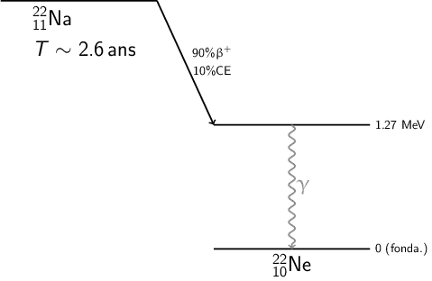
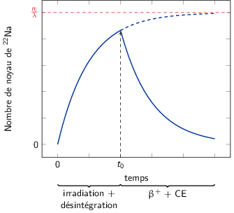
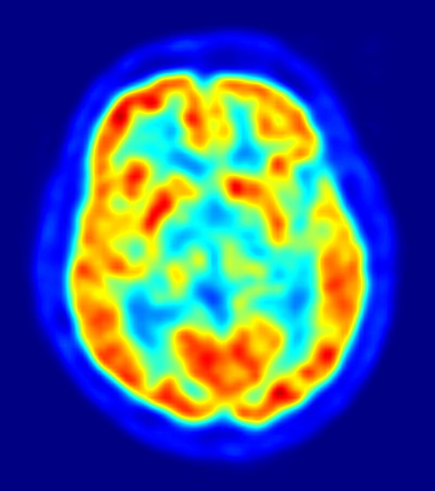
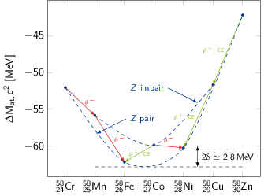

TD8 : Masses et désintégrations nucléaires
1 Définitions
Définir les termes : masse nucléaire, masse atomique, excès de masse atomique, énergie de liaison des nucléons dans le noyau, énergie de liaison moyenne par nucléon. Exprimer le \(Q\) de la réaction \(1+2 \rightarrow 3+4\) (où 1, 2, 3 et 4 sont des noyaux) en fonction respectivement des quatre premiers termes.
- masse nucléaire
la masse nucléaire correspond à la masse du noyau i.e.
\begin{align*} m\left(^\text{A}_\text{Z}\text{X}\right)c^2=Zm_pc^2+(A-Z)m_nc^2-B_N \end{align*}où \(B_N\) est égal à l'énergie de liaison des nucléons au sein du noyau.
- masse atomique
cette masse est associée à la masse de l'atome soit à la masse nucléaire à laquelle s'ajoute celle du cortège électronique
\begin{align*} M_\text{at.}\left(^\text{A}_\text{Z}\text{X}\right)c^2=m\left(^\text{A}_\text{Z}\text{X}\right)c^2+Zm_ec^2-B_e \end{align*}où \(B_e\) correspond à l'énergie de liaison des électrons. Cette quantité est particulièrement faible (∼ 3 keV/\(e^-\)) au regard des masses mises en jeu en physique nucléaire. On aura donc tendance à la négliger si bien que
\begin{align*} M_\text{at.}\left(^\text{A}_\text{Z}\text{X}\right)c^2\simeq Z\left(m_pc^2+m_ec^2\right)+\left(A-Z\right)m_nc^2-B_N \end{align*}- excès de masse atomique
écart entre la masse atomique et la masse molaire \(A\). Le carbone 12 sert toujours de référence à savoir
\begin{align*} \Delta M\left(^{12}_{6}\text{C}\right)&=0\\ \Delta M\left(^\text{A}_\text{Z}\text{X}\right)&=M_\text{at.}\left(^\text{A}_\text{Z}\text{X}\right) - A\text{ en u.m.a}\\ \Delta M\left(^\text{A}_\text{Z}\text{X}\right)c^2&=M_\text{at.}\left(^\text{A}_\text{Z}\text{X}\right)c^2 - 931.5A\text{ en MeV}\\ \end{align*}C'est généralement les valeurs \(\Delta M\left(^\text{A}_\text{Z}\text{X}\right)c^2\) qui sont tabulées.
- énergie de liaison des nucléons
la valeur de \(B_N\) est approximée par la formule de Bethe et Weizsäcker
\begin{align*} B_N=\underbrace{a_VA - a_SA^{2/3}}_{\text{modèle de la goutte liquide}}-\underbrace{a_{C}\frac{Z^2}{A^{1/3}}}_{\text{Coulomb}}-\underbrace{a_{A}\frac{\left(N-Z\right)^2}{A}}_{\text{asymétrie}}+\underbrace{\delta(A,Z)}_{\text{appariement}} \end{align*}Cette formule découle de l'analogie entre un fluide et un noyau à savoir que l'énergie de liaison d'une goutte liquide est d'autant plus grande que son volume est important (terme \(a_VA\) où \(R\propto A\)). Les nucléons en surface contribuent néanmoins moins puisqu'ils ont moins de voisins. La goutte cherche donc à minimiser sa surface d'où sa forme sphérique (terme \(a_SA^{2/3}\)). Par ailleurs, il faut tenir compte de l'interaction coulombienne : la répulsion entre protons du noyau entraîne une diminution de l'énergie de liaison. De plus, l'énergie potentielle du noyau sera d'autant plus grande que les niveaux de Fermi des neutrons et protons seront proches (terme symétrique \(a_{A}\frac{\left(N-Z\right)^2}{A}\)). Ce terme d'asymétrie traduit le fait que les nucléons étant des fermions, avoir un excédent de proton ou de neutron a tendance à augmenter l'énergie et donc diminuer la liaison du noyau en raison du remplissage des niveaux de Fermi. Ainsi, un noyau cherche à égaliser le nombre de proton et de neutrons tout du moins pour les noyaux légers. Enfin, l'appariement \(\delta(A,Z)\) joue un rôle important dans l'énergie de liaison : les noyaux ayant un nombre pair de protons/neutrons seront plus liés.
\begin{align*} \delta(A,Z)=\left\{ \begin{array}{cl} +\frac{12}{\surd A}&\text{ pour les noyaux pair-pair}\\ 0&\text{ pour les noyaux impair-pair}\\ -\frac{12}{\surd A}&\text{ pour les noyaux impair-impair} \end{array} \right. \end{align*}L'énergie de liaison moyenne par nucléon correspond à la valeur \(\frac{B_N}{A}\) qui est égale à 8 MeV/nucléon au delà de \(A\) > 20.
Réaction 1 + 2 → 3 + 4 où 1,2,3,4 sont des noyaux
La chaleur de réaction \(Q\) s'écrit
\begin{align*} Q&=m_1c^2+m_2c^2-m_3c^2-m_4c^2\\ &=M^1_\text{at.}c^2+M^2_\text{at.}c^2-M^3_\text{at.}c^2-M^4_\text{at.}c^2\quad\text{(Z conservé)}\\ &=\Delta M_1c^2+\Delta M_2c^2-\Delta M_3c^2-\Delta M_4c^2\quad\text{(A conservé)}\\ &=-\left(B^1_N+B^2_N\right)+\left(B^3_N+B^4_N\right) \end{align*}2 Décroissance radioactive du sodium 22
Le sodium 22 (2211Na), qui sera étudié au cours des travaux pratiques, est souvent employé comme source de positrons car sa période, $T$~2.6 ans, est relativement longue. Ce noyau se désintègre presqu'à 100% vers le premier état excité du néon 22, situé à 1.27 MeV, soit par émission β+ avec un rappport d'embranchement de 90%, soit par capture électronique.
- Ecrire les réactions de désintégration du 2211Na.

Décroissance radioactive \(N(t)=N_0\,e^{-\lambda t}\) où \(\lambda\) correspond à la probabilité de décroissance et est égale à \(\frac{\ln 2}{T}\), \(T\) étant la période. Ainsi, \(\lambda_\text{tot.}=\lambda_{\beta^+}+\lambda_\text{CE}=\frac{\ln 2}{T}\) avec \(\frac{\lambda_{\beta^+}}{\lambda_\text{tot.}}=90\%\) et \(\frac{\lambda_\text{CE}}{\lambda_\text{tot.}}=10\%\). On déduite que la période la capture électronique est
\begin{align*} T_\text{CE}&=\frac{\ln 2}{\lambda_\text{CE}}=\frac{\ln 2}{0.1\,\lambda_{tot.}}\\ &=\frac{T}{0.1}=10T=\unit[26]{ans} \end{align*}
- Quelle est la période partielle de capture électronique du 22Na ?
Capture électronique : \(^{22}_{11}\text{Na}+e^-\to^{22}_{10}\text{Ne}^*+\nu_e\)
La charge étant conservé tout comme le nombre de nucléons, la chaleur de réaction de la capture électronique se déduit des excès de masse
\begin{align*} Q_\text{CE}&=\Delta M_\text{at.}\left(^{22}\text{Na}\right)c^2-\Delta M_\text{at.}\left(^{22}\text{Ne}^*\right)c^2\\ &=\Delta M_\text{at.}\left(^{22}\text{Na}\right)c^2-\Delta M_\text{at.}\left(^{22}\text{Ne}\right)c^2-E^*(^{22}\text{Ne})\\ &=-5183+8025-1270=\unit[1572]{keV} \end{align*}
- Les excès de masse atomique de 22Na et 22Ne sont respectivement -5183 keV et -8025 keV. Calculer le \(Q\) de la capture électronique.
Désintégration \(\beta^+\) : \(^{22}_{11}\text{Na}\to^{22}_{10}\text{Ne}^*+e^++\nu_e\)
L'énergie cinétique maximale que puisse emporter le positron correspond au \(Q_{\beta^+}\) de la réaction soit
\begin{align*} T_\text{max}(e^+)&=Q_{\beta^+}=Q_\text{CE}-2m_ec^2\\ &=1572-1022=\unit[550]{keV} \end{align*}
- Estimer l'énergie cinétique maximale des positrons émis lors de la transition \(\beta^+\).
\(^{23}\text{Na}+p\to^{22}\text{Na}+p+n\)
\begin{align*} Q&=\Delta M_\text{at.}\left(^{23}\text{Na}\right)c^2+\cancel{\Delta M_\text{at.}(p)c^2}-\Delta M_\text{at.}\left(^{22}\text{Na}\right)-\cancel{\Delta M_\text{at.}(p)c^2}-\Delta M_\text{at.}(n)c^2\\ &=-9528+5183-8071=\unit[-12.416]{MeV}<0 \end{align*}L'énergie cinétique seuil nécessaire à la réalisation de cette réaction est
\begin{align*} T_S&=\frac{|Q|}{2}\times\frac{\sum m_{i,f}c^2}{m_\text{cible}c^2}\\ &\simeq\frac{|Q|}{2}\times\frac{\sum A}{A_\text{cible}}\\ &\simeq\frac{12.416}{2}\times\frac{23\times2+2}{23}=\unit[12.96]{MeV} \end{align*}
- Pour obtenir ainsi une source de 22Na, on irradie une cible de
sel (NaCl) avec un faisceau de protons de 155 MeV, d'intensité \(I\) = 10
μA. A cette énergie, la section efficace de la réaction citée est de 40
mb. La cible a une épaisseur de 2 mg/cm2 et on assimile le chlore naturel
au 35Cl.
- Calculer le nombre de noyaux de 2211Na produits par seconde.
- Établir l'expression du nombre \(N(t)\) de noyaux radioactifs obtenus si l'on irradie une cible avec un faisceau d'intensité constante entre les instants 0 et \(t_0\). Que devient \(N(t)\) lorsque l'on stoppe l'irradiation ? Tracer l'allure de la courbe représentant \(N(t)\). Montrer que pendant l'irradiation \(N(t)\) tend vers une valeur limite \(N_{\infty}\) et donner son expression.
- Calculer l'activité de la source de 22Na en photons de 1.27 MeV, quelques jours après une irradiation d'une heure. Exprimer le résultat en Becquerel, puis en Curie.
- Dans le spectre en énergie des photons émis par le 22Na, on observe une raie à 511 keV. Quelle est l'origine de cette raie ? Déduire l'activité de la source en photons de 511 keV.
- Combien de photons de 1.27 MeV devrait recevoir en une minute un détecteur de 5 cm2 situé à 1 m de la source ?
Le nombre de noyaux de 22Na produit est
\begin{align*} n\left(^{22}\text{Na}\right)&=\phi_p\times\rho_e\times\sigma_\text{tot.}\times\frac{\mathcal{N}}{A_\text{cible}}\\ &=\frac{I}{Ze}\times\rho_e\sigma_\text{tot.}\times\frac{\mathcal{N}}{A\left(^{23}\text{Na}\right)+A\left(^{35}\text{Cl}\right)}\\ &=\frac{10^{-5}}{1.6\,10^{-19}}\times2\,10^{-3}\times40\,10^{-3}\times10^{-24}\times\frac{6.02\,10^{23}}{58}\\ &=\unit[5.19\,10^7]{/s} \end{align*}Les réactions de désintégration sont
\begin{align*} ^{22}\text{Na}\to ^{22}\text{Ne}^*+e^++\nu_e&\quad\beta^+\text{(90\%)}\\ ^{22}\text{Na}+e^-\to ^{22}\text{Ne}^*+\nu_e&\quad\text{CE (10\%)} \end{align*}La variation du nombre de noyau de 22Na est égal au nombre de noyau crée par irradiation auquel vient se soustraire le nombre de noyau s'étant désintégré soit
\begin{align*} dn\left(^{22}\text{Na}\right)&=n_idt-\lambda ndt\\ \frac{dn}{dt}+\lambda n&=n_i=\text{constante} \end{align*}La solution de cette équation est de la forme \(n(t)=K_1e^{-\lambda t}+K_0\) où
\begin{align*} \cancel{-\lambda K_1e^{-\lambda t}}+\cancel{\lambda K_1e^{-\lambda t}}+\lambda K_0&=n_i\\ K_0&=\frac{n_i}{\lambda} \end{align*}De plus, \(n(t=0)=0\) impliquant \(K_1=-\frac{n_i}{\lambda}\) d'où
\begin{align*} n(t)=\frac{n_i}{\lambda}\left(1-e^{-\lambda t}\right) \end{align*}Pour une durée d'irradiation \(t\to\infty\), le nombre de noyau crée tend asymptotiquement vers \(n_\infty\to\frac{n_i}{\lambda}\)

\(t_0=\unit[1]{h}\ll T=\unit[2.6]{ans}\) d'où \(\lambda t=\ln 2\frac{t}{T}\ll1\). Le temps d'irradiation étant significativement plus court que la durée de vie du sodium, on peut approximer le nombre de noyau produit par
\begin{align*} n(t)\simeq\frac{n_i}{\lambda}\left(1-1+\lambda t\right)=n_i\times t \end{align*}ce qui traduit que le nombre d'irradiation est tès largement supérieur au nombre de désintégrations. Ainsi, pour une heure d'irradiation, le nombre de noyau produit sera
\begin{align*} n(\unit[1]{h})=5.19\,10^7\times3600=1.87\,10^{11} \end{align*}Sachant que 100% des désintégrations tombe sur le premier niveau excité du néon 22 et génère ainsi un photon γ de 1.27 MeV, on peut déduire l'activité en photon γ
\begin{align*} \mathcal{A}(t)&=\lambda n(t)=\frac{\ln 2}{T}\times n(\unit[1]{h})\\ &=\frac{\ln 2}{2.6\times365\times24\times3600}\times1.87\,10^{11}\\ &=\unit[1581]{Bq}=\unit[42.7]{nCi}\text{ où 1 Ci = 3.7 10$^{10}$ Bq} \end{align*}La raie à 511 keV correspond aux photons issus de l'annihilation \(e^++e^-\to2\gamma\). En effet, dans 90% des cas, la désintégration se fait par désintégration \(\beta^+\) où le positron émis, une fois son énergie cinétique dissipée, s'annihilie avec les électrons de la matière. Par conservation de l'impulsion, les deux photons sont émis dos-à-dos, chacun emportant une énergie cinétique de 511 keV soit la masse de l'électron/positron. Du fait que ces deux photons sont émis dans 90% des désintégrations, l'activité en photons de 511 keV est égale à
\begin{align*} \mathcal{A}_{\gamma_{0.511}}=2\times90\%\times\mathcal{A}_{\gamma_{1.27}}=\unit[2846]{Bq} \end{align*}Étant donné l'activité \(\mathcal{A}_{\gamma_{1.27}}=1581\) désintégrations par seconde dans tout l'espace soit 4π stéradian, le nombre de photons détectés à 1 m de la cible devient
\begin{align*} N_{\gamma_{1.27}}(\text{détectés/min})&=\mathcal{A}_{\gamma_{1.27}}\times60\times\frac{S}{4\pi d^2}\\ &=\frac{5}{4\pi100^2}\times1581\times60\\ &\sim4\gamma\text{ de 1.27 MeV en 1 minute de mesure} \end{align*}
3 Tomographie par émission de positrons

Figure 3: Vue axiale du cerveau par tomographie à émission de positrons
La tomographie par émission de positrons (TEP) est une technique d'imagerie isotopique utilisant des molécules biologiques marquées par des isotopes radioactifs émetteurs \(\beta^+\) à demi-vie très brève, tel que le 11C, qui permettent une visualisation des organes en fonctionnement, par mesure des deux photons de 511 keV émis simultanément à 180 degrés l'un de l'autre lors de l'annihilation \(e^+e^-\). Les courtes périodes des radioisotopes utilisés pour la TEP (de 2 mn pour le 15O à 110 mn pour le 18F) imposent la présence simultanée d'un laboratoire de radiochimie et d'une caméra TEP sur le lieu de l'accélérateur produisant les radioéléments.
L'isotope radioactif 11C, de période radioactive \(T_{1/2}\) = 20.36 min, est formé par la réaction nucléaire
\begin{align*} p + ^{14}_{7}\text{N}\rightarrow ^{11}_{6}\text{C}+\alpha \end{align*}en irradiant une cible d'azote de nombre de masse A = 14, d'épaisseur 10 mg/cm2 avec un faisceau de protons contenant 4 1012 particules/seconde. La section efficace totale de cette réaction est σ = 200 mb. Au début de l'irradiation (\(t=0\)), il n'y a aucun noyau radioactif dans l'échantillon.
- Calculer le nombre de noyaux radioactifs obtenus au bout de 3h d'irradiation.
La variation du nombre de noyaux de carbone 11, \(\frac{dn}{dt}\), est égale à au nombre de noyaux créés par irradiation soustrait du nombre de noyaux se désintégrant soit \(\frac{dn}{dt}=n_i-\lambda n\). La résolution de cette équation différentielle donne une variation temporelle du nombre de noyaux \(n(t)\) égale à
\begin{align*} n(t)&=\frac{n_i}{\lambda}\left(1-e^{-\lambda t}\right)\\ &\text{où }n_i=\phi_p\times\rho_e\times\frac{\mathcal{N}}{A_\text{cible}}\times\sigma_\text{tot.} \end{align*}Ainsi, le nombre de noyaux radioactifs de carbone 11 obtenus au bout de 3 heures d'irradiation est
\begin{align*} n(t=\unit[3]{h})=&\frac{4\,10^{12}\times10\,10^{-3}\times6.02\,10^{23}\times200\,10^{-27}}{14}=\unit[3.44\,10^8]{noyaux/s}\\ &\times\frac{20.36\times60}{\ln 2}\times\left(1-e^{-\frac{\ln 2\times3\times60}{20.36}}\right)\\ =&\,\unit[6.05\,10^{11}]{noyaux} \end{align*}
- On stoppe alors l'irradiation. Calculer l'activité qu'aura alors l'échantillon au bout de 30 min, temps nécessaire pour introduire le 11C dans des molécules complexes qui sont alors injectées au patient.
À \(t=t_0=\unit[3]{h}\), l'irradiation est stoppée, les noyaux de carbone ne faisant que se déintégrer. L'activité en radioéléments devient
\begin{align*} \mathcal{A}(t'=t-t_0=\unit[30]{min})&=\lambda\times n(t'=\unit[30]{min})\\ &=\frac{\ln 2}{T}\times n(t_0)\,e^{-\lambda t'}\\ &=\frac{\ln 2}{20.36\times60}\times6.05\,10^{11}\,e^{-\ln 2\times30/20.36}\\ &=\unit[1.24\,10^8]{Bq}=\unit[124]{MBq}\\ &=\unit[3.3]{mCi}\text{ où }\unit[1]{Ci}=\unit[3.7\,10^{10}]{Bq} \end{align*}
- Quelle sera l'activité résiduelle 24h après la fin de l'irradiation ? Commenter les deux résultats.
Après 24 heures, l'activité de la "source" sera
\begin{align*} \mathcal{A}(\unit[24]{h})&=\frac{\ln 2}{20.36\times60}\times6.05\,10^{11}\,e^{-\ln2\times24\times60/20.36}\\ &=\unit[1.75\,10^{-13}]{Bq} \end{align*}- 30 minutes après irradiation, l'activité de la source injectée, de l'ordre de quelques centaines de MBq, est suffisante pour réaliser une TEP autrement dit pour observer les photons γ à 511 keV. Cette activité qui varie entre 150 et 400 MBq pour un adulte correspond à une dose équivalente à 10 mSv1
- la période très courte du carbone 11 fait que l'activité de la source décroît rapidement, le radioélement étant à l'état de trace au bout de 24 h. En réalité, la radioactivité disparaît encore plus rapidement car les radioéléments non fixés sont naturellement éliminés avec les urines. La principale contrainte d'utilisation de la TEP est en fait lié à la courte demi-vie des isotopes radioactifs qui nécessitent donc la présence d’un cyclotron à proximité du centre d’examen.
4 Formule de Bethe et Weizsäcker
Expliquer les différents termes intervenant dans la formule semi-empirique donnant la masse atomique :
1\begin{align*} M_\text{at}(Z,A)c^2 &= Z(m_pc^2 + m_ec^2)+(A-Z)m_nc^2-a_v A\\ &+a_s A^{2/3}+a_c\frac{Z^2}{A^{1/3}}+a_A\frac{(A - 2Z)^2}{A}-\delta(Z,A) \end{align*}cette dose est équivalente à celle d'un scanner thoraco-abdominal. En France, la limite d'exposition pour le public est fixée à 1 mSv par an hors exposition médicale. À titre de comparaison, une radiographie des poumons correspond à 0.1 mSv tout comme un voyage long courrier Paris-New York aller-retour. Les effets d'une cigarette sont eux évalués à 0.01 mSv par cigarette : la plupart des fumeurs dépassent très vite le seuil légal d'exposition de la population générale.
avec \(\delta(Z,A) = +\frac{12\text{ MeV}}{\sqrt{A}}\) pour \(Z\) et \(N\) pairs, \(-\frac{12\text{ MeV}}{\sqrt{A}}\) pour \(Z\) et \(N\) impairs, et 0 pour \(A\) impair.
- En déduire que l'excès de masse atomique \(\Delta M_\text{at}c^2\) pour des noyaux isobariques s'écrit comme un polynome du second degré en \(Z\). Combien y a-t-il de paraboles possibles ?
À partir de la question 1, la masse atomique est égale à
\begin{align*} M_\text{at.}(A,Z)c^2=&Z(m_pc^2+m_ec^2)+(A-Z)m_nc^2-B_N\\ =&Z(m_pc^2+m_ec^2)+(A-Z)m_nc^2\\ &-a_VA+a_SA^{2/3}+a_C\frac{Z^2}{A^{1/3}}+a_A\frac{(A-2Z)^2}{A}-\delta(Z,A) \end{align*}L'origine des différents termes de l'énergie de liaison \(B_N\) est expliquée à la question 1.
- cf. Exercice 5
En utilisant la formule de Bethe et Weizsäcker (BW), prévoir quel est l'élément le plus stable des familles des isobares de nombre de masse \(A\) = 21 et 95. On donne les valeurs suivantes des coefficients de la formule de BW : \(a_v\) = 15.56 MeV, \(a_c\) = 0.697 MeV, \(a_s\) = 17.23 MeV et \(a_A\) = 23.285 MeV.
Expérimentalement, les noyaux suivants sont β-stables : 2110Ne et 9542Mo. Discuter ce résultat.
Le nombre de nucléons ou nombre de masse \(A\) est impair pour les isobares \(A=21\) et \(A=95\). Aussi, le terme d'appariement \(\delta(Z,A)\) est donc nul. L'élément le plus stable dans une famille d'isobares est celui avec l'énergie de liaison \(B_N\) maximale. Or, \(B_N\) est maximum pour \(Z=Z_0\) tel que \(\left.\frac{\partial B_N}{\partial Z}\right|_{Z_0}=0\) d'où
\begin{align*} \left.\frac{\partial B_N}{\partial Z}\right|_{Z=Z_0}=-\frac{2a_CZ_0}{A^{1/3}}+4a_A\frac{A-2Z_0}{A}&=0\\ -a_CZ_0A^{2/3}+2a_AA-4a_AZ_0&=0\\ Z_0&=\frac{2a_AA}{a_CA^{2/3}+4a_A} \end{align*}Application numérique :
\(A=21\) \(Z_0=9.93\sim10\) correspond au noyau β-stable de néon 22
\(A=95\) \(Z_0=41.1\sim41\) ne correspond pas au noyau β-stable de molybdène 95
- la formule de Bethe et Weizsäcker est globalement correcte pour les noyaux légers,
- pour les noyaux plus lourds, l'écart est généralement de ±1 protons,
- de manière générale, la formule de Bethe et Weizsäcker est un bon indicateur afin de déterminer si un noyau est loin, en terme de protons, de l'élément stable pour une masse donnée i.e. pour \(A\) fixé.
- On peut montrer que l'énergie potentielle d'attraction gravitationnelle
d'une masse sphérique \(M\) de densité uniforme et de rayon \(R\) est donnée par
\(E_G=-\frac{3 GM^2}{5R}\).
- Déterminer la formule donnant l'énergie de liaison d'une étoile à neutrons (\(Z = 0\)) à partir de l'énergie de liaison des nucléons dans le noyau donnée par la formule de BW (on négligera l'énergie d'appariement δ), en lui ajoutant un terme d'énergie potentielle de type \(E_G\) (attention, ce terme correspond à une contribution positive à l'énergie de liaison).
- En déduire l'ordre de grandeur du rayon minimal d'une étoile à neutrons ayant la densité nucléaire et n'ayant aucun autre constituant que des neutrons (on supposera que ce nombre \(N\) de neutrons est grand, et on utilisera \(G/c^4\) = 1.3239 10-39 GeV-1.fm). Calculer sa masse. Comparer au rayon et à la masse du Soleil.
Pour une étoile à neutrons, l'énergie de liaison devient (\(Z=0\))
\begin{align*} B_N&=a_VA-a_SA^{2/3}-\cancel{a_C\frac{Z^2}{A^{1/3}}}-a_A\frac{(Z-N)^2}{A}+\underbrace{\delta(Z,A)}_{\ll1}\\ &\text{ avec }A=Z+N=N\quad B_N=a_VN-a_SN^{2/3}-a_A\frac{N^{\cancel{2}}}{\cancel{N}}\\ B_N&=\left(a_V-a_A\right)N-a_SN^{2/3}<0 \end{align*}En tenant compte de l'énergie potentielle gravitationnelle, l'énergie de liaison d'une étoile à neutrons devient
\begin{align*} B_*&=B_N-E_G=\left(a_V-a_A\right)N-a_SN^{2/3}+\frac{3GM^2}{5R} \end{align*}En considérant l'étoile uniquement constituée de neutrons, sa masse s'écrit \(M=N\times m_n\). Par ailleurs, le rayon de cette étoile est égal à \(r_0\times N^{1/3}\) d'où
\begin{align*} B_*&=\left(a_V-a_A\right)N-a_SN^{2/3}+\frac{3Gm_n^2\,N^2}{5r_0\,N^{1/3}} \end{align*}Dans la mesure où le nombre de nucléons est grand, on pourra négliger le terme relatif aux effets de surface \(a_SN^{2/3}\) devant ceux proportionnel à \(N\) et l'énergie gravitationnelle. Ainsi, l'énergie de liaison se réduit à
\begin{align*} B_*&=\underbrace{\left(a_V-a_A\right)N}_{<0}+\underbrace{\frac{3Gm_n^2\,N^{5/3}}{5r_0}}_{>0} \end{align*}Le premier terme négatif traduit le fait qu'un "noyau/étoile" uniquement constitué de neutrons n'est pas un système physiquement stable. Toutefois, le caractère instable de ce système est contrebalancé par l'effondrement gravitationnel qui est d'autant plus fort que le nombre de neutrons i.e. la masse est grande. Ainsi, au-delà d'une valeur critique \(N=N_0\) telle que \(B_*=0\), l'énergie gravitationnelle devient supérieure à l'instabilité inhérente à la composition en neutrons du "noyau/étoile". La valeur critique \(N_0\) se traduit également en terme de rayon minimal pour qu'une étoile à neutrons subsiste \(R_\text{min}=r_0\times N_0^{1/3}\). La valeur critique du nombre de neutrons est
\begin{align*} B_*&=\left(a_V-a_A\right)N_0+\frac{3Gm_n^2\,N_0^{5/3}}{5r_0}=0\\ N_0^{-2/3}&=-\frac{3Gm_n^2}{5r_0\left(a_V-a_A\right)}\\ N_0^{2/3}&=\frac{5r_0\left(a_A-a_V\right)}{3Gm_n^2}\\ &\text{où }m_n=\unit[0.939]{GeV/c}^2\to Gm_n^2=1.3239\,10^{-39}\times(0.939)^2\\ N_0^{2/3}&=\frac{5\times1.25\times\left(23.285-15.56\right)\,10^{-3}}{3\times1.3239\,10^{-39}\times(0.939)^2}\\ &=1.377\,10^{37}\to N_0=5.11\,10^{55} \end{align*}Le rayon minimal d'une étoile à neutron est donc2
2\begin{align*} R_\text{min}&=r_0\times N_0^{1/3}=1.25\,10^{-15}\times\left(5.11\,10^{55}\right)^{1/3}\\ &=\unit[4.64]{km} \end{align*}si l'on calcule la masse minimale de cet objet à partir de \(M_*=N_0\times m_n\), on trouve une masse \(M_*=0.04M_\odot\) où \(M_\odot\) est égal à 2 1030 kg soit sensiblement plus faible que la masse typique d'une étoile à neutron \(M_*=1.4M_\odot\) (masse de Chandrasekhar). En réalite, le rayon d'une étoile à neutron varie de 10 à 20 km (\(R_\odot=695\,800\) km) ce qui se traduit en terme de masse par une gamme entre 0.4 et 5 masses solaires.
5 Parabole de masse et désintégrations radioactives
On s'intéresse aux isobares de nombre de masse \(A\) = 58 dont on donne ci-dessous les excès de masse atomique \(\Delta M_\text{at}c^2\), en MeV :
\begin{align*} \begin{array}{rrrrrrr} ^{58}_{24}\text{Cr}&^{58}_{25}\text{Mn}&^{58}_{26}\text{Fe}&^{58}_{27}\text{Co}&^{58}_{28}\text{Ni}&^{58}_{29}\text{Cu}&^{58}_{30}\text{Zn}\\ -52.050&-55.830&-62.152&-59.844&-60.225&-51.662&-42.210 \end{array} \end{align*}- Rappeler les différents types de désintégrations isobariques et les conditions énergétiques associées.
- Désintégrations isobariques (β-, β+, CE)
- désintégration β-
\(^A_Z\text{X}\to\,^A_{Z+1}\text{Y}+e^-+\bar{\nu}_e\)
\begin{align*} Q>0 \Longleftrightarrow\,& m(A,Z)c^2>m(A,Z+1)c^2+m_ec^2\\ &M_\text{at.}(A,Z)c^2-Zm_ec^2>M_\text{at.}(A,Z+1)c^2-(Z+1)m_ec^2+m_ec^2\\ &M_\text{at.}(A,Z)c^2>M_\text{at.}(A,Z+1)c^2\\ &\Delta M_\text{at.}(A,Z)c^2>\Delta M_\text{at.}(A,Z+1)c^2 \end{align*}La désintégration β- faisant intervenir 3 corps dont 2 particules légères, le spectre en énergie cinétique de l'électron est continu entre 0 et \(Q_{\beta^-}=\Delta M_\text{at.}(A,Z)c^2-\Delta M_\text{at.}(A,Z+1)c^2\).
- désintégration β+
\(^A_Z\text{X}\to\,^A_{Z-1}\text{Y}+e^++\nu_e\)
\begin{align*} Q>0 \Longleftrightarrow\,& m(A,Z)c^2>m(A,Z-1)c^2+m_ec^2\\ &M_\text{at.}(A,Z)c^2-Zm_ec^2>M_\text{at.}(A,Z-1)c^2-(Z-1)m_ec^2+m_ec^2\\ &M_\text{at.}(A,Z)c^2>M_\text{at.}(A,Z-1)c^2+2m_ec^2\\ &\Delta M_\text{at.}(A,Z)c^2>\Delta M_\text{at.}(A,Z-1)c^2+2m_ec^2 \end{align*}De même que pour la désintégration β-, le spectre en énergie du positron est continu depuis 0 jusqu'à \(Q_{\beta^+}=\Delta M_\text{at.}(A,Z)c^2-\Delta M_\text{at.}(A,Z-1)c^2-2m_ec^2\)
- capture électronique
\(^A_Z\text{X}+e^-\to\,^A_{Z-1}\text{Y}+\nu_e\)
\begin{align*} Q>0 \Longleftrightarrow\,& m(A,Z)c^2+m_ec^2>m(A,Z-1)c^2\\ &M_\text{at.}(A,Z)c^2-Zm_ec^2+m_ec^2>M_\text{at.}(A,Z-1)c^2-(Z-1)m_ec^2\\ &M_\text{at.}(A,Z)c^2>M_\text{at.}(A,Z-1)c^2\\ &\Delta M_\text{at.}(A,Z)c^2>\Delta M_\text{at.}(A,Z+1)c^2\\ &Q_\text{CE} = Q_{\beta^+}+2m_ec^2 \end{align*}La capture électronique est privilégiée d'un point de vue énergétique par rapport à la désintégration β+. Dès lors que la désintégration β+ est autorisée, cette désintégration entre en concurrence avec la capture électronique. Pour les noyaux lourds, seule la capture électronique est généralement autorisée.
La capture électronique correspond à la capture d'un électron du cortège électronique de l'atome : cet électron appartient aux couches les plus internes et donc les plus proches du noyau. En fonction de la couche \(K,L,M\) de laquelle est capturé l'électron, une réorganisation du cortège électronique intervient ayant pour conséquence l'émission de rayons X de désexcitation.
- Estimer graphiquement l'énergie d'appariement \(\delta(A)\) en MeV.
Le diagramme \(M_\text{at.}c^2=f(Z)\) ou \(\Delta M_\text{at.}c^2=f(Z)\) pour une famille d'isobares donnée est le suivant

Figure 4: Paraboles de masse pour les noyaux de la famille \(A=58\)
L'expression de \(M_\text{at.}c^2\) ou \(\Delta M_\text{at.}c^2\) en fonction de \(Z\) prend la forme d'une parabole car
\begin{align*} \Delta M_\text{at.}(Z,A)c^2=&M_\text{at.}(Z,A)c^2 - 931.5A\\ =&Z\left(m_pc^2+m_ec^2\right)+\left(A-Z\right)m_nc^2-B_N-931.5A\\ =&Z\left(m_pc^2+m_ec^2\right)+\left(A-Z\right)m_nc^2\\ &-a_VA+a_SA^{2/3}+a_C\frac{Z^2}{A^{1/3}}+a_A\frac{\left(A-2Z\right)^2}{A}-\delta(Z,A)-931.5A\\ =&A\left(m_nc^2-a_V+a_A-931.5\right)+a_SA^{2/3}-\delta(Z,A)\\ &+Z\left(m_pc^2+m_ec^2-m_nc^2-4a_A\right)+Z^2\left(\frac{a_C}{A^{1/3}}+\frac{4a_A}{A}\right)\\ =&\alpha+\beta Z+\gamma Z^2 \end{align*}Ainsi, pour un nombre de masse donné \(A\), la variation de la masse atomique ou de l'excès de masse atomique en fonction de la charge \(Z\) est décrit par une seule parabole dans le cas où \(A\) est impair et donc \(\delta(Z,A) = 0\) et translatée de ± \(\delta(Z,A)\) lorsque \(A\) est pair. En établissant les paraboles pour les isobares \(A=58\), on peut déduire de l'écart entre ces deux paraboles la valeur de \(2\delta\). On obtient une valeur voisine de 2.8 MeV soit \(\delta=\unit[1.4]{MeV}\), relativement proche de la valeur issue de B&W \(\frac{\unit[12]{MeV}}{\surd A}=\unit[1.58]{MeV}\).
- Quelles sont les désintégrations isobariques possibles pour les noyaux \(A\) = 58 donnés et l'énergie maximale des électrons (ou des positrons) émis dans ces désintégrations ? Préciser le (ou les) noyau(x) stable(s) vis à vis de ces désintégrations.
D'après la figure 4, les désintégrations β- sont Cr→ Mn, Mn→ Fe et Co→ Ni. Les désintégrations β+ ou CE sont Zn→ Cu, Cu→ Ni et Co→ Fe. Les deux noyaux stables de cette famille sont donc le fer 58 et le nickel 58.
L'énergie cinétique maximum des électrons/positrons émis respectivement par désintégration β- et β+ sont les suivantes
\(^{58}_{24}\text{Cr}\to ^{58}_{25}\text{Mn}+e^-+\bar{\nu}_e\)
\begin{align*} Q_{\beta^-}& = \Delta M(^{58}_{24}\text{Cr})c^2-\Delta M(^{58}_{25}\text{Mn})c^2\\ &=\unit[3.78]{MeV}=T_\text{max}(e^-) \end{align*}\(^{58}_{25}\text{Mn}\to ^{58}_{26}\text{Fe}+e^-+\bar{\nu}_e\)
\begin{align*} Q_{\beta^-}& = \Delta M(^{58}_{25}\text{Mn})c^2-\Delta M(^{58}_{26}\text{Fe})c^2\\ &=\unit[6.32]{MeV}=T_\text{max}(e^-) \end{align*}\(^{58}_{27}\text{Co}\to ^{58}_{28}\text{Ni}+e^-+\bar{\nu}_e\)
\begin{align*} Q_{\beta^-}& = \Delta M(^{58}_{27}\text{Co})c^2-\Delta M(^{58}_{28}\text{Ni})c^2\\ &=\unit[0.38]{MeV}=T_\text{max}(e^-) \end{align*}\(^{58}_{30}\text{Zn}+e^-\to ^{58}_{29}\text{Cu}+\nu_e\)
\begin{align*} Q_\text{CE}& = \Delta M(^{58}_{30}\text{Zn})c^2-\Delta M(^{58}_{29}\text{Cu})c^2\\ &=\unit[9.45]{MeV}\\ Q_{\beta^+}&=Q_\text{CE} - 2m_ec^2=\unit[8.48]{MeV}=T_\text{max}(e^+) \end{align*}\(^{58}_{29}\text{Cu}+e^-\to ^{58}_{28}\text{Ni}+\nu_e\)
\begin{align*} Q_\text{CE}& = \Delta M(^{58}_{29}\text{Cu})c^2-\Delta M(^{58}_{28}\text{Ni})c^2\\ &=\unit[8.56]{MeV}\\ Q_{\beta^+}&=Q_\text{CE} - 2m_ec^2=\unit[7.54]{MeV}=T_\text{max}(e^+) \end{align*}\(^{58}_{27}\text{Co}+e^-\to ^{58}_{26}\text{Fe}+\nu_e\)
\begin{align*} Q_\text{CE}& = \Delta M(^{58}_{27}\text{Co})c^2-\Delta M(^{58}_{26}\text{Fe})c^2\\ &=\unit[2.31]{MeV}\\ Q_{\beta^+}&=Q_\text{CE} - 2m_ec^2=\unit[1.29]{MeV}=T_\text{max}(e^+) \end{align*}